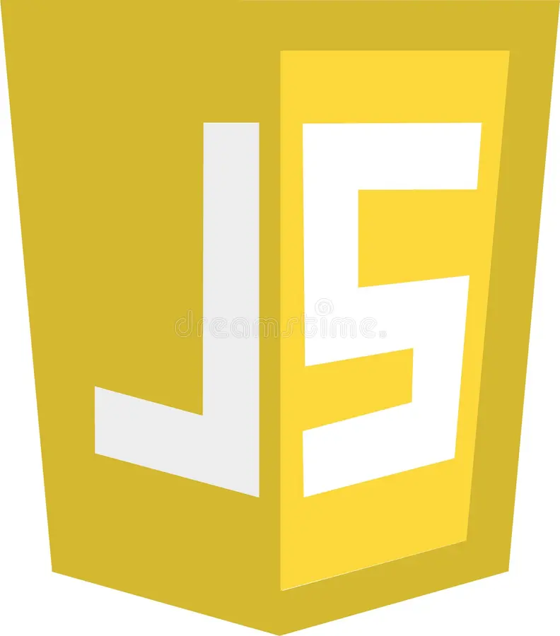
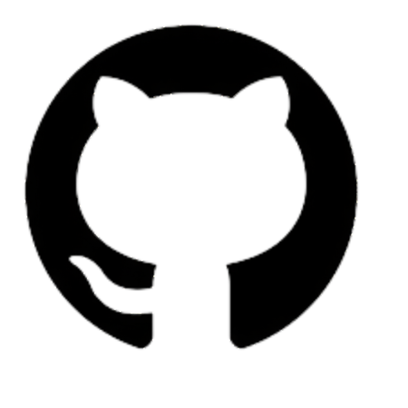

MF
M. Faizan Hussain

M. Faizan Hussain
I'm studying in full stack developer (HTML, CSS, Bootstrap, Tailwindcss) with a focus on creating (and occasionally designing) exceptional digital experiences that are fast, accessible, visually appealing, and responsive. Even though I have been creating web applications for over 7 Months, I still love it as if it was something new
Korangi Crossing, Pakistan
Available for new project
I am a UI developer and currently studying Full Stack Development.
I have gained proficiency in HTML, CSS, Bootstrap, and Tailwind CSS.
Even though I’m at the start of my development journey, I’m truly excited about learning how websites and web apps are made. I enjoy experimenting with layouts, styling pages, and understanding how frontend code works.
I have 1 year of experience in UI development, and I am continuously improving my skills by building projects regularly.
💬 I am always ready to work on UI development and new ideas.
One last thing, I'm available for UI Development, so feel free to reach out 😉
The skills, tools, and technologies I am really good at:
HTML
CSS

Javascript
Tailwind CSS
Bootstrap
Figma

GitHub
Hypertext Preprocessor
Structured Query Language
Microsoft Office
Here is a quick summary of my most recent experiences:
Some of the noteworthy projects I have built:


I created this coffee website using HTML, CSS, Tailwind CSS, and Bootstrap. It features a modern layout that works on all devices.
The site is fully responsive and user-friendly with sections like menu, about, and contact.


Foodie is an online food website with options like burgers, salads, and sandwiches. The layout is clean with clear prices and images.
Chefs, reviews, and ratings are included to help customers decide easily.


This is a responsive single-page bakery website with navbar, banners, product cards, and footer layout.
Interactive elements and mobile-friendly UI using Tailwind and Bootstrap.
What's next? Feel free to reach out if you're looking for a developer, have a question, or just want to say hi!
📧 info@protfolio.com
📞 +123-456-7890